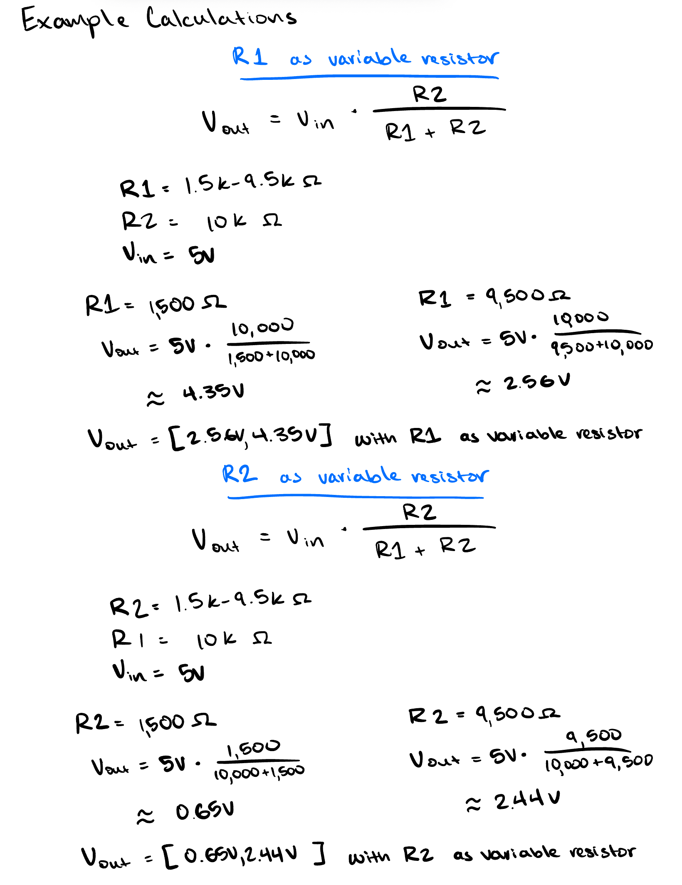

Here is all the documentation for assignment 3!
Here is all the documentation for assignment 3!
This schematic shows 3 LEDs (yellow, red, and blue) connected to pins ~9, ~6, and ~3. It also shows the schematic for the photoresistor that controls the yellow LED and the blinking of the red and blue LEDs.
These were my calculations for determining which resistors to use for each LED pin. I decided to use 220 ohm resisters for every LED pin. I used a 10k ohm resistor for the photoresistor because I measured 1.5k-9.5k ohms with my multimeter for the photoresister in different light conditions.

This is the physical implementation of the circuit on the breadboard, LEDs, photoresistor, resistors, and connection to the ground/pins.
Below is the code used to control the system.
// Analog input pin that the photoresistor is attached to
const int analogInPin = A0;
// Analog output pin that the yellow LED is attached to
const int yled = 9;
// Analog output pin that the blue LED is attached to
const int bled = 6;
// Analog output pin that the red LED is attached to
const int rled = 3;
// value read from the pot
int sensorValue = 0;
// value output to the PWM (analog out)
int outputValue = 0;
void setup() {
// initialize serial communications at 9600 bps:
Serial.begin(9600);
}
void loop() {
// read the analog in value:
sensorValue = analogRead(analogInPin);
// constrains analog in value to certain values
sensorValue = constrain(sensorValue, 120, 840);
// map it to the range of the analog out:
outputValue = map(sensorValue, 120, 360, 0, 255);
// change the strength of the yellow LED light based off the sensor value
analogWrite(yled, outputValue);
// turn off the yellow LED and blink the blue and red LEDs alternating if the sensor value is in the bottom half of its range
if (sensorValue < 240) {
analogWrite(yled, LOW);
analogWrite(bled, HIGH);
analogWrite(rled, LOW);
delay(1000);
analogWrite(bled, LOW);
analogWrite(rled, HIGH);
delay(1000);
// keep the red and blue LEDs off if the sensor value is in the top half of its range
} else if (sensorValue > 240) {
analogWrite(rled, LOW);
}
// print the results to the Serial Monitor:
Serial.print("sensor = ");
Serial.print(sensorValue);
Serial.print("\t output = ");
Serial.println(outputValue);
// wait 2 milliseconds before the next loop for the analog-to-digital
// converter to settle after the last reading:
delay(2);
}
In my voltage divider, the variable resistor can be either R1 or R2, but it will change the logic of my sensor reading. If R1(top resistor) increases, the the voltage will decrease. If R2(bottom resistor) increases, the voltage will increase.
If I had a 10-bit pWM and 16-bit analog-to-digital converter instead of 8-bit and 10-bit values, I would need to change the ranges I amp. The analogWrite PWM range is [0, 255] (2^8) currently, so for a 10-bit PWM (2^10), I would change the range to [0, 1023]. The analogRead uses a 10-bit analog digital converter with a range of [0, 1023] (2^10) crruently, so for a 16-bit analog digital converter, I would need a range of [0, 65,535] (2^16). Therefore, my map() code would change from map(sensorValue, 120, 360, 0, 255) to map(sensorValue, 0, 65535, 0, 1023).